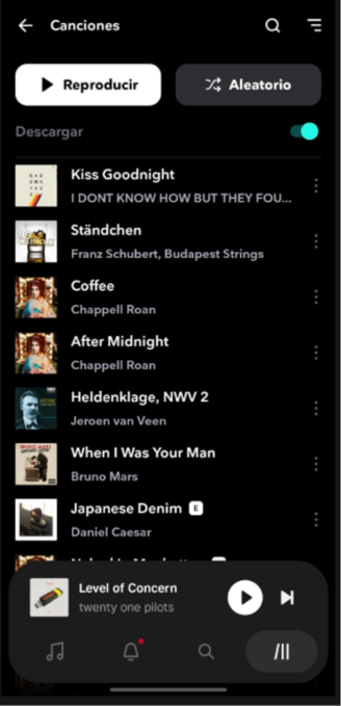
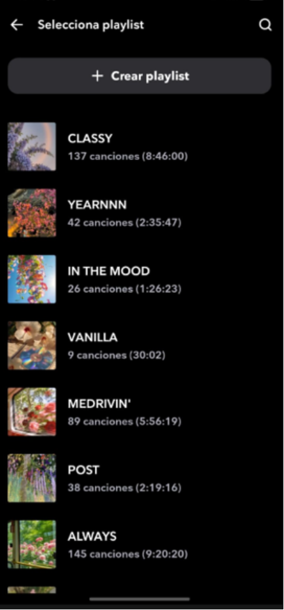
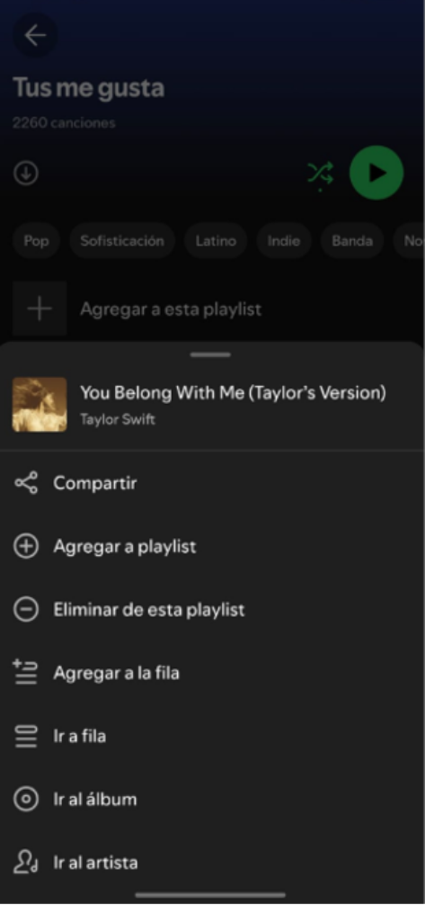
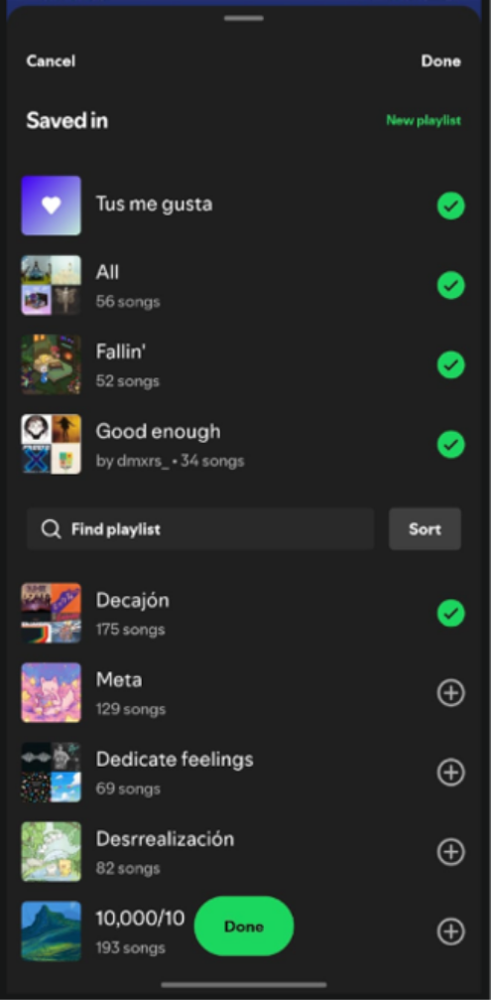
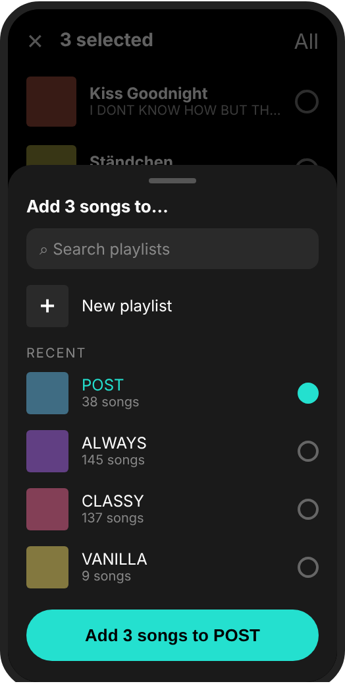
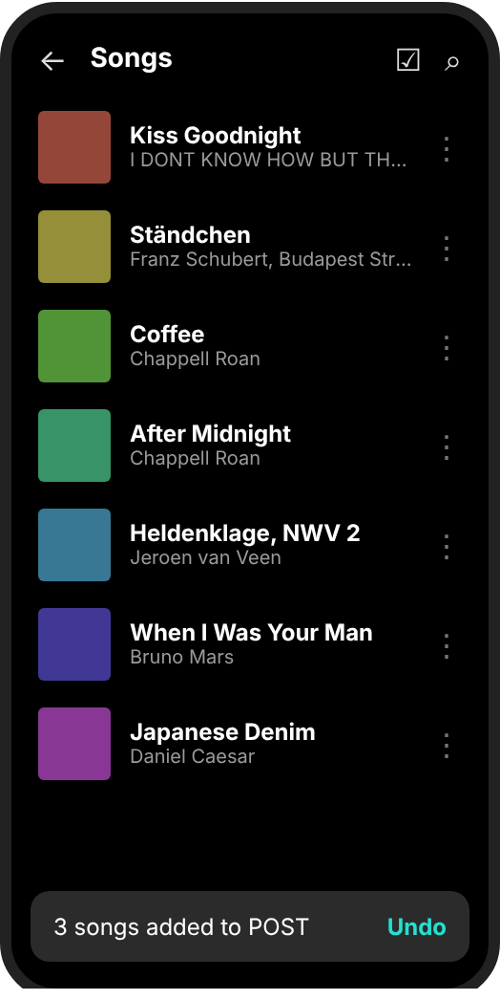
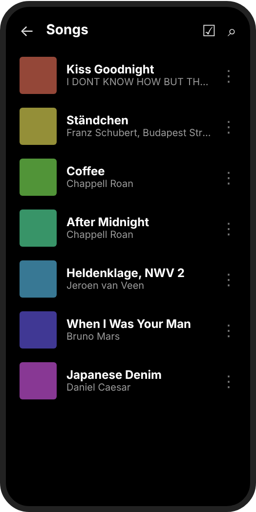
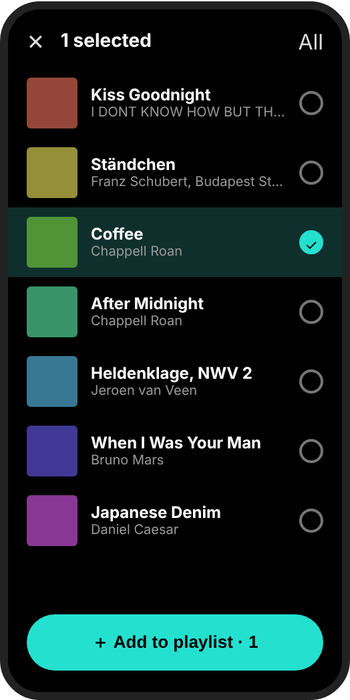

1. Selected application
| App | Tidal, the music streaming service (mobile version). |
| Selected feature | Adding songs to a playlist. |
| The task | I have a list of songs in my collection and I want to put several of them into a new playlist. |
I use Tidal on my phone every day, and building a playlist is one of the things I do the most. It is also where the app frustrates me the most: it only lets me add songs one at a time.
2. Current user flow
Songs → three dots → Add to playlist → find the playlist → select it → start again with the next song. The app is in Spanish because my phone is.
|
 Step 1. I tap the three dots of one song. |

Step 2. In the menu I look for “Añadir a playlist”. |
 Steps 3 and 4. I look for my playlist in a long list and tap it. Then I go back to step 1 for the next song. |
| Songs to add | 1 | 5 | 10 | 20 |
| Taps in Tidal today | 4 | 20 | 40 | 80 |
In Tidal there is no other method for adding songs. Spotify, in contrast, offers two different routes.
Reference: Spotify, Method 1 (from a song)
|
Three dots of a song. |
 “Agregar a playlist”. |

I tick all the playlists I want. |
 I tap “Done”. |
Reference: Spotify, Method 2 (from the playlist)
|
Inside the playlist I tap “Agregar”. |
I add all the songs I want to this one playlist. |
3. UX analysis
| How many steps? | Four per song, and they cannot be grouped. Five songs cost 20 taps and ten songs cost 40. |
| Is the navigation clear? | Each screen is understandable, but there is only one route: the menu of a single song. There is no way to add songs from inside a playlist, like Spotify’s Method 2. |
| Is the feature easy to find? | Not really. “Añadir a playlist” is the fourth item in a menu of nine and looks the same as “Credits” or “Go to album”, even though building playlists is a very frequent action. |
| Are the buttons easy to identify? | The three dots are small, gray and at the edge of the screen. Nothing suggests that I can select several songs. The menu also mixes languages (“Save for Later” appears among Spanish labels). |
| Is the information well organized? | The playlist list shows cover, name, songs and duration, but it is not in alphabetical order and nothing explains the order. Spotify uses check marks to show where a song already is. |
| Confusing moments | Searching for the same playlist again and again, and losing track of which songs I have already added. |
| What would I change? | Let me choose the songs first and the playlist only once. |
4. Design proposal
I kept Tidal’s dark look and its cyan color so it still feels like the same app. What changes is how the task works: a selection mode in the song list, a button at the bottom and a single playlist window.
|
A. Selection mode. Circles replace the three dots, the top shows how many songs are selected and the cyan button offers the next action. |
 B. One playlist window. “New playlist” is first, recent playlists come next and the button says exactly what will happen. |
 C. Feedback. A message confirms the result and offers “Undo”. |
| Element | Today | Proposal |
| Start | Three dots and a nine-item menu. | Press and hold a song to start selecting. |
| Selection | One song at a time. | Circles with a check mark, a highlighted row and a “3 selected” counter. |
| Main action | Hidden in the menu. | A wide cyan button at the bottom, where the thumb already is. |
| Playlist list | Full screen, with no clear order. | A window with search, “New playlist” on top and a “Recent” label. |
| Confirmation | Not needed, because only one song moves. | A button with the count and the name (“Add 3 songs to POST”) and an “Undo” message. |
5. Proposed user flow
Press and hold a song → tap more songs → Add to playlist → choose the playlist → confirm.
|
 1. Press and hold a song. |
 2. Selection mode starts with that song. |
3. I tap the other songs. |
4. “Add to playlist” and I choose one. |
5. I confirm and see the result. |
| Songs to add | 1 | 5 | 10 | 20 |
| Tidal today | 4 | 20 | 40 | 80 |
| Proposal | 4 | 8 | 13 | 23 |
The proposal needs one tap per song plus three fixed taps (Add, playlist, confirm). With a single song it costs the same as today.
6. Justification
Current experience → Proposed experience
| 1. Which feature? | Adding songs to a playlist in Tidal’s mobile app. |
| 2. How does it work now? | Three dots, “Añadir a playlist”, find the playlist, select it. Repeated for every song. |
| 3. What problem did I find? | There is no way to add several songs at once, so the effort grows with every song. Spotify has two alternatives and Tidal has none. |
| 4. What did I change? | A selection mode, a button at the bottom, one playlist window with a clear confirm button and an “Undo” message. |
| 5. Why is it better? | Adding 10 songs goes from 40 taps to 13, and I choose the playlist once instead of ten times. |
Design decisions
Choose first, decide once. Selecting the songs before the destination works like email or a photo gallery, so there is nothing new to learn. It solves the repetition, which is the core of the problem.
Action where the thumb is. The main button is at the bottom, wide, and in the only bright color on a dark screen, so it is the first thing I see once I have selected something.
Always show what is happening. The counter, the check marks and the highlighted rows show what will be affected, and the button repeats the count and the playlist name.
Fewer decisions in the playlist window. “New playlist” is on top because that is my task, and recent playlists come first, so I rarely need to search.
Mistakes are easy to fix. Adding many songs at once can go wrong, so the message includes “Undo”.
Consistency. Same black background, white text, cyan color and rounded buttons as Tidal today. Only the way the task works changes.
What I would explore next. Spotify’s check marks to see where a song already is, and an “Add songs” button inside each playlist. I left them out to keep this proposal focused on one clear experience.
My school: Tecnológico de Monterrey
Contact me on WhatsApp: Say hello!
Send me an email: A01715095@tec.mx